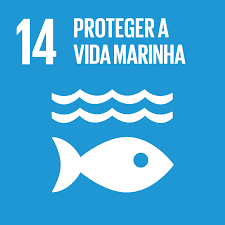
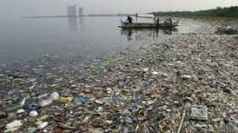
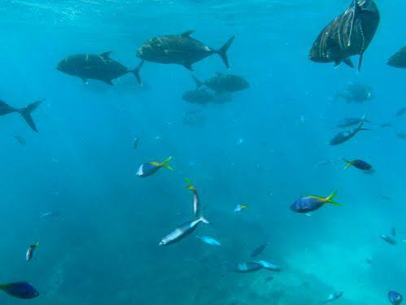

Biodiversidade
São o lar de peixes, tartarugas, baleias, corais, algas e muitos outros organismos.

Conheça a importância da ODS 14 e veja como pequenas atitudes podem ajudar a conservar mares, rios e toda a vida aquática.
Os Objetivos de Desenvolvimento Sustentável (ODS) fazem parte de uma agenda criada pela Organização das Nações Unidas (ONU). São 17 objetivos que buscam enfrentar desafios sociais, econômicos e ambientais e construir um futuro mais justo e sustentável.
A ODS 14, chamada Vida na Água, busca conservar e utilizar de forma sustentável os oceanos, mares e recursos marinhos. Ela incentiva o combate à poluição, a proteção dos ecossistemas aquáticos e o uso responsável dos recursos do mar.
Os oceanos ocupam grande parte da superfície do planeta e são essenciais para o equilíbrio ambiental. Eles abrigam uma enorme variedade de seres vivos e influenciam o clima e o ciclo da água.
São o lar de peixes, tartarugas, baleias, corais, algas e muitos outros organismos.
Absorvem e distribuem calor, ajudando a regular a temperatura da Terra.
Fornecem alimentos e sustentam atividades como pesca, transporte e turismo.
As atividades humanas podem causar danos aos ambientes aquáticos. Entre os principais problemas estão:

A poluição pode ferir animais, prejudicar a reprodução de espécies e desequilibrar cadeias alimentares. Também afeta as pessoas: comunidades que dependem da pesca e do turismo podem perder renda, e a contaminação da água e dos alimentos representa riscos à saúde e à economia.
Não é necessário morar perto do mar para contribuir. O lixo descartado nas ruas pode ser levado pela chuva até bueiros, córregos e rios, chegando aos oceanos. Algumas atitudes fazem diferença:
Use garrafas reutilizáveis e evite produtos descartáveis quando possível.
Separe os resíduos recicláveis e nunca jogue lixo em ruas, rios ou praias.
Evite desperdícios e não descarte óleo, tinta ou produtos químicos no ralo.
Converse sobre a preservação ambiental e participe de ações de limpeza e educação.
Quando os oceanos estão saudáveis, milhares de espécies encontram alimento e abrigo. Proteger a vida marinha também significa preservar o equilíbrio dos ecossistemas e a qualidade de vida das pessoas.

"O oceano dá vida ao planeta. Proteger suas águas é proteger o nosso futuro."
A ODS 14 mostra que a conservação dos oceanos é uma responsabilidade de todos. A poluição, a pesca excessiva e as mudanças climáticas ameaçam a vida aquática e também afetam as pessoas. Com informação, consumo consciente, descarte correto do lixo e apoio à preservação ambiental, podemos contribuir para mares mais limpos e saudáveis.